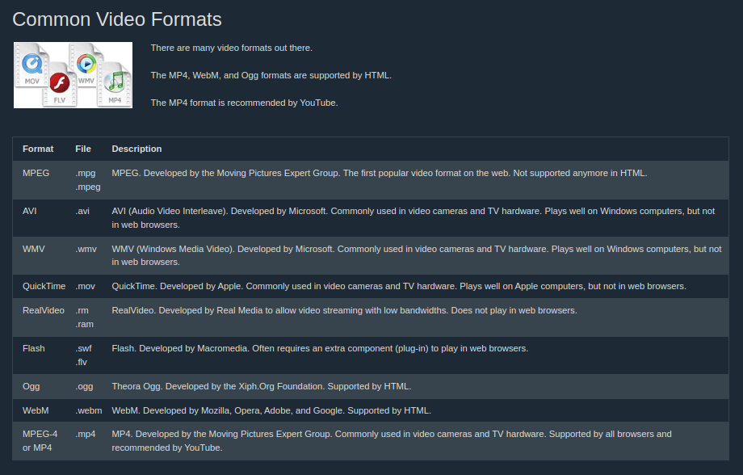

Multimedia yang bisa ada di dalam sebuah halaman web adalah sound, music, videos, movies, and animations
Multimedia punya banyak format. It can be almost anything you can hear or see, like images, music, sound, videos, records, films, animations, and more. Web pages biasanya mempunyai beberapa tipe multimedia elements dan formats.
